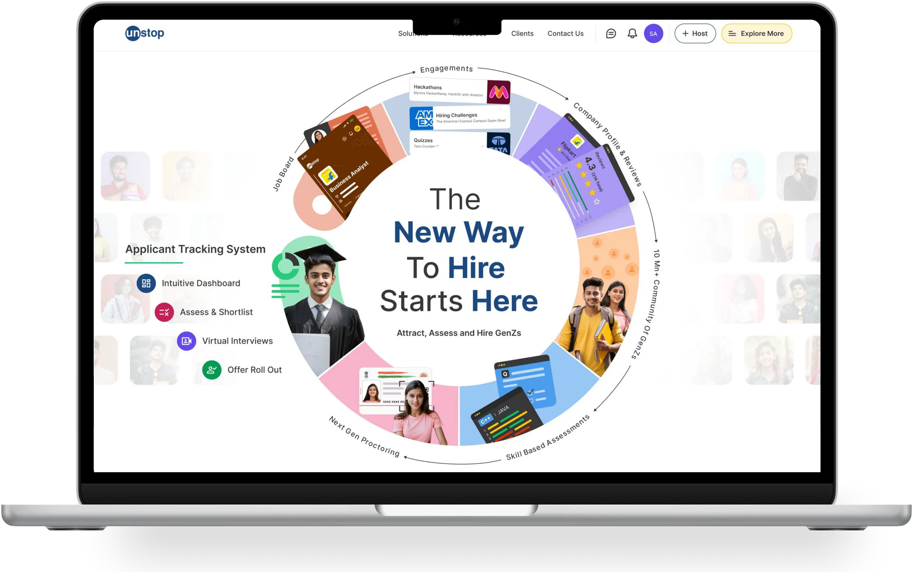
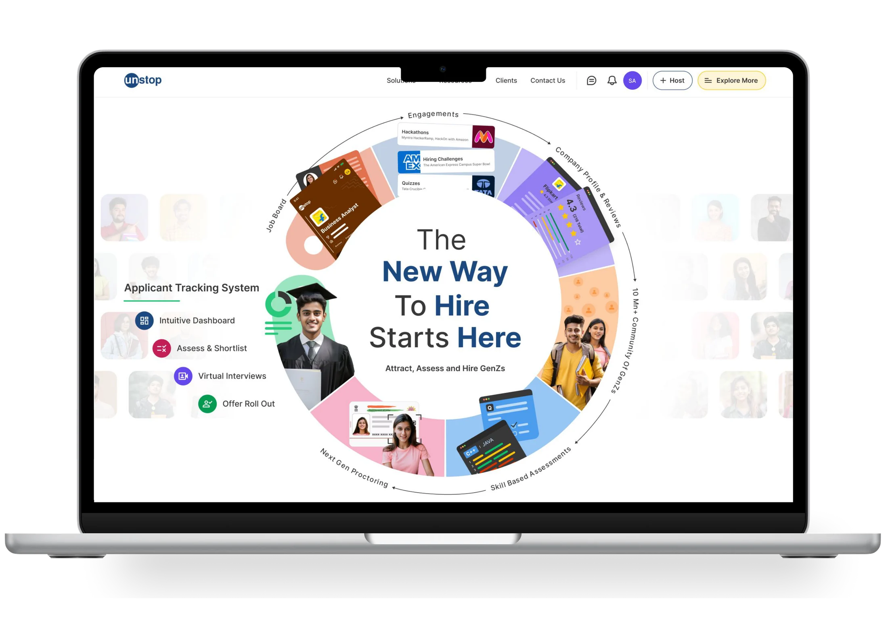

Unstop · Edtech · Growth
Interactive landing page

Built a circular solution wheel with interactive hover effects so users can easily explore all seven offerings in one clean, engaging view.
Dynamic & scroll-driven UX
- Extended interactive structure: Broadened the interactive elements seamlessly from the hero section into lower fold areas.
- Scroll-triggered motion: Integrated responsive card movements aligned with user scrolling to keep the browsing flow dynamic.
- Context-rich visuals: Embedded key contextual details and supporting imagery for every core feature to guide users effectively.
- Unified flow: Designed every interaction to feel cohesive, driving better immersion and higher overall engagement.
Complete Page
The full page in motion — scroll through it below.

Keep exploring